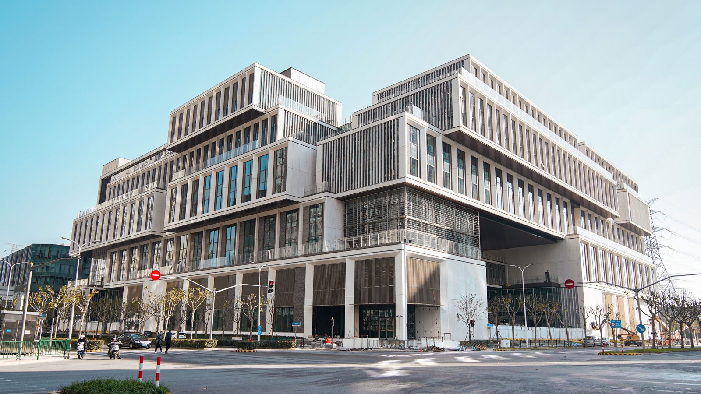

Education

NYU Shanghai
Sep 2023 - Jun 2027, Shanghai, China
Junior, intended to major in Mathematics and Computer Science.
Courses Taken
- Mathematics
- see course notes here
- Honors Calculus
- Honors Analysis I & II
- Honors Linear Algebra I & II
- Honors Algebra
- Honors Theory of Probability
- Honors Ordinary Differential Equations
- Partial Differential Equations
- Complex Variable
- Foundamental Dynamics of Earth's Atmosphere and climate
- Scientific Computing in Finance
- Computer Science
- Introduction to Computer Science and Data Science
- Data Structures
- Algorithms
- Computer Systems Organization
- Foundations of Machine Learning
- Data Management and Analysis
- Introduction to Web Design and Computer Principles
- DevOps and Agile Methodologies
Work and Project Experience
TAMID, NYU Shanghai — Director of Tech
Sep 2023 - Jan 2024, Shanghai, China
- Engaged closely with startup clients to grasp their specific requirements, leading to custom tech solutions that elevated their product offerings and user experience
- Directed and taught the team in optimizing website functionality to autonomously generate AI-driven exams, securing a competitive edge in the market
Digital Heritage Lab, NYU Shanghai — Research Assistant
Mar 2024 - Present, Shanghai, China
- Incorporated RAG AI technologies to embed an AI chatbot into software, enhancing digital heritage protection with skills in RAG and server creation
- Contributed to the design of the AI guide software in collaboration with other researchers
GitHub
View my open-source projects and code contributions on my GitHub profile.
Learn more about programs at NYU Shanghai.